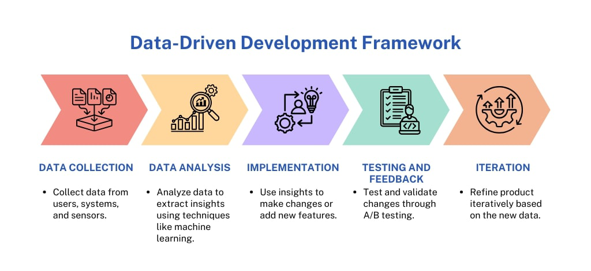

Data-driven development
Kirjeldus
Andmepõhine arendus kasutab andmeid ja statistikat otsuste tegemisel ja funktsionaalsuste loomisel.
Arendustsükli joonis

Plussid ja miinused
- Pluss: otsused on andmetel põhinevad
- Miinus: sõltuvus andmete kvaliteedist
Töövahend
Google Analytics – kasutajakäitumise analüüsiks ja arenduse suunamiseks.
Viited
- https://analytics.google.com